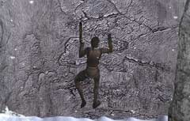

| 概要 | 地図 |
| 淡いヒント集 | ヒント集 | 的確なヒント集 |
| 攻略最短ルート |
| 場所選択に戻る |
雪山

山小屋から無事脱出したあなたは、この崖を渡らなければならない。人間には飛び越えられる距離ではないが、道具を使えば何とかなるはずだ。 壊れた橋のロープを切り、それを横に栄えている木のてっぺんに引っかけてみよう。あなたなら飛び越えられるはずだ。 こんなふうに。

崖を飛び越えたあなたは、今度は崖を上らなくてはならない。「手斧」を使って崖を上っていこう。 ただし、崖に見えるヒビは全くあてにならない。上下左右に移動して、頂上を目指そう。大丈夫、落ちることはない。 
崖を上ると、墜落した飛行機を見つけられるはずだ。運転手が乗っていないので、探してみよう。意外な場所にいるはずだ。 
木に引っかかった彼を起こすためには、どうしたらよいだろうか? |
| 場所選択に戻る |
| 概要 | 地図 |
| 淡いヒント集 | ヒント集 | 的確なヒント集 |
| 攻略最短ルート |
Syberia II
| 目次へ戻る | ページの上部へ |